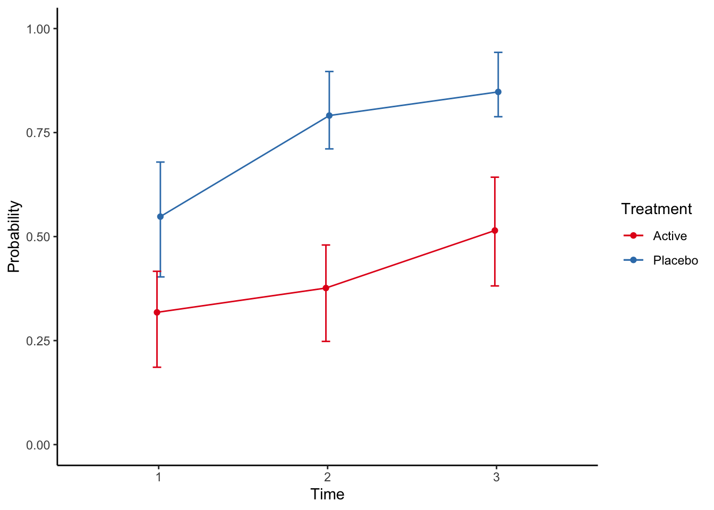

Chapter 4 Dichotomous endpoints
4.1 Single follow-up
For a single follow-up assessment of a dichotomous endpoint, the main method I use is a standard logistic regression. Then we can adjust for stratification factors in the randomisation in addition to other pre-specified covariates, both categorical and continuous. In the simulated example, we define that the primary outcome is the dichotomous categorical outcome at time 3. Note that usually the baseline status of all patients are negative for the outcome, so adjusting for baseline is not necessary.
4.1.1 Stata code
use "stata/rct", clear
tabulate catout trt if time == 3, column
logistic catout i.trt i.site covar if time==3, coef##
## . use "stata/rct", cle(all strata combined)
##
## . tabulate catout trt if time == 3, column
##
## +-------------------+
## | Key |
## |-------------------|
## | frequency |
## | column percentage |
## +-------------------+
##
## Categorica | Treatment
## l outcome | Placebo Active | Total
## -----------+----------------------+----------
## Negative | 9 22 | 31
## | 18.00 45.83 | 31.63
## -----------+----------------------+----------
## Positive | 41 26 | 67
## | 82.00 54.17 | 68.37
## -----------+----------------------+----------
## Total | 50 48 | 98
## | 100.00 100.00 | 100.00
##
## . logistic catout i.trt i.site covar if time==3, coef
##
## Logistic regression Number of obs = 98
## LR chi2(5) = 48.59
## Prob > chi2 = 0.0000
## Log likelihood = -36.862204 Pseudo R2 = 0.3973
##
## ------------------------------------------------------------------------------
## catout | Coef. Std. Err. z P>|z| [95% Conf. Interval]
## -------------+----------------------------------------------------------------
## trt |
## Active | -2.890301 .7850252 -3.68 0.000 -4.428922 -1.351679
## |
## site |
## 2 | .7783404 .8580245 0.91 0.364 -.9033566 2.460037
## 3 | 1.423791 .7786531 1.83 0.067 -.1023412 2.949923
## 4 | .0253234 .8082887 0.03 0.975 -1.558893 1.60954
## |
## covar | 1.001078 .2329461 4.30 0.000 .5445124 1.457644
## _cons | -2.463577 .8925892 -2.76 0.006 -4.21302 -.7141344
## ------------------------------------------------------------------------------
##
## .Note that the use the coef option to get the log odds ratio estimates.
4.1.2 R code
rct <- read_dta("stata/rct.dta") %>%
modify_at(c("trt","catout"), haven::as_factor, levels = "labels") %>%
modify_at(c("site","time"), haven::as_factor)
rct %>%
filter(time==3) %>%
glm(catout ~ trt + site + covar , data=., family = binomial) %>%
summary##
## Call:
## glm(formula = catout ~ trt + site + covar, family = binomial,
## data = .)
##
## Deviance Residuals:
## Min 1Q Median 3Q Max
## -1.9659 -0.5335 0.1943 0.5095 2.8873
##
## Coefficients:
## Estimate Std. Error z value Pr(>|z|)
## (Intercept) -2.46358 0.89259 -2.760 0.005780 **
## trtActive -2.89030 0.78502 -3.682 0.000232 ***
## site2 0.77834 0.85802 0.907 0.364337
## site3 1.42379 0.77865 1.829 0.067470 .
## site4 0.02532 0.80829 0.031 0.975007
## covar 1.00108 0.23295 4.297 1.73e-05 ***
## ---
## Signif. codes: 0 '***' 0.001 '**' 0.01 '*' 0.05 '.' 0.1 ' ' 1
##
## (Dispersion parameter for binomial family taken to be 1)
##
## Null deviance: 122.318 on 97 degrees of freedom
## Residual deviance: 73.724 on 92 degrees of freedom
## AIC: 85.724
##
## Number of Fisher Scoring iterations: 6Not surprisingly, the estimates are identical.
4.1.3 Reporting
Reporting for dichotomous endpoints is a bit tricky. The natural estimates from a logistic regression is odds and odds ratios, but these are less interpretable than risk differences or relative risk. As New England Journal of Medicine states in their Statistical Guidelines: “Odds ratios should be avoided, as they may overestimate the relative risks in many settings and be misinterpreted.” Fortunately, both Stata and R can estimate adjusted risk differences and relative risks from logistic regressions.
4.1.3.1 Stata code
First we compute the average prediced marginal probabilities. Basically this is done by calculating the predicted probability of a positive outcome for each patient, under both treatments, and then averaging. The standard errors are computed by the delta method.
use "stata/rct", clear
quietly logistic catout i.trt i.site covar if time==3, coef
margins trt##
## . use "stata/rct", cle(all strata combined)
##
## . quietly logistic catout i.trt i.site covar if time==3, coef
##
## . margins trt
##
## Predictive margins Number of obs = 98
## Model VCE : OIM
##
## Expression : Pr(catout), predict()
##
## ------------------------------------------------------------------------------
## | Delta-method
## | Margin Std. Err. z P>|z| [95% Conf. Interval]
## -------------+----------------------------------------------------------------
## trt |
## Placebo | .8499905 .0387218 21.95 0.000 .7740972 .9258839
## Active | .5111833 .0533918 9.57 0.000 .4065374 .6158293
## ------------------------------------------------------------------------------
##
## .The adjusted risk difference is calculated similarily.
use "stata/rct", clear
quietly logistic catout i.trt i.site covar if time==3, coef
margins, dydx(trt)##
## . use "stata/rct", cle(all strata combined)
##
## . quietly logistic catout i.trt i.site covar if time==3, coef
##
## . margins, dydx(trt)
##
## Average marginal effects Number of obs = 98
## Model VCE : OIM
##
## Expression : Pr(catout), predict()
## dy/dx w.r.t. : 1.trt
##
## ------------------------------------------------------------------------------
## | Delta-method
## | dy/dx Std. Err. z P>|z| [95% Conf. Interval]
## -------------+----------------------------------------------------------------
## trt |
## Active | -.3388072 .0661086 -5.13 0.000 -.4683777 -.2092367
## ------------------------------------------------------------------------------
## Note: dy/dx for factor levels is the discrete change from the base level.
##
## .We see that the risk difference is the difference of the estimated marginal probabilities we computed previously.
The relative risk is a bit more difficult to calculate, but not much. It uses the nlcom method to compute non-linear combinations of estimates.
use "stata/rct", clear
quietly logistic catout i.trt i.site covar if time==3, coef
quietly margins trt, post
margins, coeflegend
nlcom (ratio1: log(_b[1.trt]/_b[0bn.trt]))##
## . use "stata/rct", cle(all strata combined)
##
## . quietly logistic catout i.trt i.site covar if time==3, coef
##
## . quietly margins trt, post
##
## . margins, coeflegend
##
## Predictive margins Number of obs = 98
## Model VCE : OIM
##
## Expression : Pr(catout), predict()
##
## ------------------------------------------------------------------------------
## | Margin Legend
## -------------+----------------------------------------------------------------
## trt |
## Placebo | .8499905 _b[0bn.trt]
## Active | .5111833 _b[1.trt]
## ------------------------------------------------------------------------------
##
## . nlcom (ratio1: log(_b[1.trt]/_b[0bn.trt]))
##
## ratio1: log(_b[1.trt]/_b[0bn.trt])
##
## ------------------------------------------------------------------------------
## | Coef. Std. Err. z P>|z| [95% Conf. Interval]
## -------------+----------------------------------------------------------------
## ratio1 | -.5084969 .1141546 -4.45 0.000 -.7322358 -.284758
## ------------------------------------------------------------------------------
##
## .The trick is to know what goes into the _b[]-brackets, which will be revealed using the `coeflegend´-option. Note that we use the logarithmic function for stability. To get the relative risk estimates, the results need to be exponentiated. Note that I do not know the properties of this estimator, and it might be clever to check the estimates using bootstrap.
Some journals require calculation of the number needed to treat (NNT), at least if the confidence interval of the adjusted risk difference does not include zero (for which the NNT is undefined). This is simply done by inverting the adjusted risk difference estimate (both point estimate and the confidence limits).
4.1.3.2 R code
The average predicted marginal probabilities are not easily computed in R. One option is to use the estimated marginal means computed using the emmeans-package:
rct %>%
filter(time == 3) %>%
glm(catout ~ trt + site + covar , data=., family = binomial) %>%
emmeans("trt", type = "response")## trt prob SE df asymp.LCL asymp.UCL
## Placebo 0.946 0.0343 Inf 0.824 0.985
## Active 0.492 0.0933 Inf 0.318 0.668
##
## Results are averaged over the levels of: site
## Confidence level used: 0.95
## Intervals are back-transformed from the logit scaleWe notice that the estimates are quite different from the average prediced marginal probabilities. The problem also is that the emmeans-package does not present pairwise comparisons on the probability scale.
Another option is to bootstrap the predicted marginal predicitons:
library(boot)
fpred <- function(formula, data, indices){
d <- data[indices,]
fit <- glm(formula, data = d, family = binomial)
pred <- prediction(fit,data = d, at = list(trt = c("Active", "Placebo"))) %>%
as_tibble %>%
group_by(trt) %>%
summarise(mean = mean(fitted)) %>%
ungroup() %>%
mutate(name = paste0(trt)) %>%
select(name,mean) %>%
spread(name,mean) %>%
as_vector
return(pred)
}
data <- filter(rct, time == 3)
result <- boot(data = data,
statistic = fpred,
R = 10000,
formula = catout ~ trt + site + covar,
parallel = "multicore",
ncpus = 4) %>%
tidy(conf.int = TRUE)
result %>%
select(-bias) %>%
knitr::kable(digits = 3)| term | statistic | std.error | conf.low | conf.high |
|---|---|---|---|---|
| Active | 0.511 | 0.067 | 0.382 | 0.645 |
| Placebo | 0.850 | 0.042 | 0.767 | 0.928 |
We see that the estimates are identical to the Stata estimates, although the standard errors and confidence limits are a bit different.
The estimated marginal risk difference in R is computed using the margins-package.
rlogistic <- rct %>%
filter(time==3) %>%
glm(catout ~ trt + site + covar , data=., family = binomial)
margins(model = rlogistic, variables = "trt", data = filter(rct,time==3), vce = "delta") %>%
summary()## factor AME SE z p lower upper
## trtActive -0.3388 0.0661 -5.1250 0.0000 -0.4684 -0.2092We see that the estimates are identical to the Stata estimates.
Risk ratios are definitely not that easily computed in R, probably best done using bootstrapping:
library(boot)
fpred <- function(formula, data, indices){
d <- data[indices,]
fit <- glm(formula, data = d, family = binomial)
pred <- prediction(fit,data = d, at = list(trt = c("Active", "Placebo"))) %>%
as_tibble %>%
group_by(trt) %>%
summarise(mean = mean(fitted)) %>%
ungroup() %>%
mutate(name = paste0(trt)) %>%
select(name,mean) %>%
spread(name,mean) %>%
as_vector
return(pred["Active"]/pred["Placebo"])
}
data <- filter(rct, time == 3)
result <- boot(data = data,
statistic = fpred,
R = 10000,
formula = catout ~ trt + site + covar,
parallel = "multicore",
ncpus = 4) %>%
tidy(conf.int = TRUE)
result %>%
select(-bias) %>%
knitr::kable(digits = 3)| term | statistic | std.error | conf.low | conf.high |
|---|---|---|---|---|
| Active | 0.601 | 0.08 | 0.448 | 0.763 |
4.2 Repeated follow-up
When there are repeated dichotomous endpoints, there are usually two methods available, either the generalized estimating equations method or the generalized mixed model method. I prefer the mixed model approach because it has better missing data properties, and I like that the parameter estimates are interpretable conditional on the subject. In my mind it is more aligned to a causal interpretation. I will show how to do the mixed logistic regression model. We skip the simple model and go straight to a model with treatment-time interaction. Note that usually a dichotomous endpoint all have the same value at baseline (all subjects are in the same state), thus we rarely include the baseline. The model is a simple random intercept model, but it could of course also be expanded to a random intercept and slope model.
4.3 Treatment-time interaction model
In Stata, the model is coded as:
use "stata/rct", clear
bysort time: tabulate catout trt, column
melogit catout i.trt i.site covar i.time i.trt#i.time if time != 0 || pid: ##
## . use "stata/rct", cle(all strata combined)
##
## . bysort time: tabulate catout trt, column
##
## -------------------------------------------------------------------------------
## -> time = 0
##
## +-------------------+
## | Key |
## |-------------------|
## | frequency |
## | column percentage |
## +-------------------+
##
## Categorica | Treatment
## l outcome | Placebo Active | Total
## -----------+----------------------+----------
## Negative | 50 48 | 98
## | 100.00 100.00 | 100.00
## -----------+----------------------+----------
## Total | 50 48 | 98
## | 100.00 100.00 | 100.00
##
## -------------------------------------------------------------------------------
## -> time = 1
##
## +-------------------+
## | Key |
## |-------------------|
## | frequency |
## | column percentage |
## +-------------------+
##
## Categorica | Treatment
## l outcome | Placebo Active | Total
## -----------+----------------------+----------
## Negative | 24 32 | 56
## | 48.00 66.67 | 57.14
## -----------+----------------------+----------
## Positive | 26 16 | 42
## | 52.00 33.33 | 42.86
## -----------+----------------------+----------
## Total | 50 48 | 98
## | 100.00 100.00 | 100.00
##
## -------------------------------------------------------------------------------
## -> time = 2
##
## +-------------------+
## | Key |
## |-------------------|
## | frequency |
## | column percentage |
## +-------------------+
##
## Categorica | Treatment
## l outcome | Placebo Active | Total
## -----------+----------------------+----------
## Negative | 12 29 | 41
## | 24.00 60.42 | 41.84
## -----------+----------------------+----------
## Positive | 38 19 | 57
## | 76.00 39.58 | 58.16
## -----------+----------------------+----------
## Total | 50 48 | 98
## | 100.00 100.00 | 100.00
##
## -------------------------------------------------------------------------------
## -> time = 3
##
## +-------------------+
## | Key |
## |-------------------|
## | frequency |
## | column percentage |
## +-------------------+
##
## Categorica | Treatment
## l outcome | Placebo Active | Total
## -----------+----------------------+----------
## Negative | 9 22 | 31
## | 18.00 45.83 | 31.63
## -----------+----------------------+----------
## Positive | 41 26 | 67
## | 82.00 54.17 | 68.37
## -----------+----------------------+----------
## Total | 50 48 | 98
## | 100.00 100.00 | 100.00
##
##
## . melogit catout i.trt i.site covar i.time i.trt#i.time if time != 0 || pid:
##
## Fitting fixed-effects model:
##
## Iteration 0: log likelihood = -133.59899
## Iteration 1: log likelihood = -129.32428
## Iteration 2: log likelihood = -129.32244
## Iteration 3: log likelihood = -129.32244
##
## Refining starting values:
##
## Grid node 0: log likelihood = -130.87679
##
## Fitting full model:
##
## Iteration 0: log likelihood = -130.87679
## Iteration 1: log likelihood = -129.7867
## Iteration 2: log likelihood = -129.37214
## Iteration 3: log likelihood = -129.31054
## Iteration 4: log likelihood = -129.31042
## Iteration 5: log likelihood = -129.31042
##
## Mixed-effects logistic regression Number of obs = 294
## Group variable: pid Number of groups = 98
##
## Obs per group:
## min = 3
## avg = 3.0
## max = 3
##
## Integration method: mvaghermite Integration pts. = 7
##
## Wald chi2(9) = 57.65
## Log likelihood = -129.31042 Prob > chi2 = 0.0000
## ------------------------------------------------------------------------------
## catout | Coef. Std. Err. z P>|z| [95% Conf. Interval]
## -------------+----------------------------------------------------------------
## trt |
## Active | -1.445692 .5336445 -2.71 0.007 -2.491616 -.3997679
## |
## site |
## 2 | -.0293421 .4666747 -0.06 0.950 -.9440077 .8853234
## 3 | .72617 .4145006 1.75 0.080 -.0862363 1.538576
## 4 | .5185491 .4721013 1.10 0.272 -.4067524 1.443851
## |
## covar | .9174909 .1319527 6.95 0.000 .6588684 1.176113
## |
## time |
## 2 | 1.787348 .5856394 3.05 0.002 .6395156 2.93518
## 3 | 2.365878 .6353582 3.72 0.000 1.120599 3.611157
## |
## trt#time |
## Active#2 | -1.406754 .7657322 -1.84 0.066 -2.907561 .0940536
## Active#3 | -1.127376 .785537 -1.44 0.151 -2.667 .4122484
## |
## _cons | -4.424402 .7595232 -5.83 0.000 -5.91304 -2.935764
## -------------+----------------------------------------------------------------
## pid |
## var(_cons)| .0684106 .4545936 1.51e-07 31004.17
## ------------------------------------------------------------------------------
## LR test vs. logistic model: chibar2(01) = 0.02 Prob >= chibar2 = 0.4384
##
## .In R, this model is coded as:
rct %>%
filter(time != 0) %>%
glmer(catout ~ trt + time + trt*time + site + covar + (1|pid),
data = .,
family = binomial,
nAGQ = 7)## Generalized linear mixed model fit by maximum likelihood (Adaptive
## Gauss-Hermite Quadrature, nAGQ = 7) [glmerMod]
## Family: binomial ( logit )
## Formula: catout ~ trt + time + trt * time + site + covar + (1 | pid)
## Data: .
## AIC BIC logLik deviance df.resid
## 280.6208 321.1402 -129.3104 258.6208 283
## Random effects:
## Groups Name Std.Dev.
## pid (Intercept) 0.2615
## Number of obs: 294, groups: pid, 98
## Fixed Effects:
## (Intercept) trtActive time2 time3
## -4.42430 -1.44555 1.78736 2.36563
## site2 site3 site4 covar
## -0.02945 0.72597 0.51845 0.91748
## trtActive:time2 trtActive:time3
## -1.40683 -1.127164.3.1 Reporting
Plotting i Stata
use stata/rct, clear
quietly melogit catout i.trt i.site covar i.time i.trt#i.time if time != 0 || pid:
*Compute the predictive margins by time and treatment
quietly margins time#trt
*Plot the predictive margins. Note that the arguments after the comma is just to prettify the plot.
marginsplot, graphregion(color(white)) graphregion(color(white)) plotregion(color(white)) ytitle("Marginal estimates") ylabel(,nogrid) legend(region(color(none) lstyle(none)) cols(1) ring(0) bplacement(nwest)) title("")
graph export stata/figures/cat_fig1.pdf, replace ##
## . use stata/rct, cle(all strata combined)
##
## . quietly melogit catout i.trt i.site covar i.time i.trt#i.time if time != 0 ||
## > pid:
##
## .
## . *Compute the predictive margins by time and treatment
##
## .
## . quietly margins time#trt
##
## .
## . *Plot the predictive margins. Note that the arguments after the comma is just
## > to prettify the plot.
##
## .
## . marginsplot, graphregion(color(white)) graphregion(color(white)) plotregion(c
## > olor(white)) ytitle("Marginal estimates") ylabel(,nogrid) legend(region(colo
## > r(none) lstyle(none)) cols(1) ring(0) bplacement(nwest)) title("")
##
## Variables that uniquely identify margins: time trt
##
## . graph export stata/figures/cat_fig1.pdf, replace
## (file stata/figures/cat_fig1.pdf written in PDF format)
##
## .knitr::include_graphics("stata/figures/cat_fig1.pdf")Plotting in R
fpred <- function(formula, data, indices){
d <- data[indices,]
fit <- glmer(formula, data = d, family = binomial)
pred <- prediction(fit,
data = d,
at = list(trt = c("Active", "Placebo"), time = c("1", "2", "3"))) %>%
as_tibble %>%
group_by(trt, time) %>%
summarise(mean = mean(fitted)) %>%
ungroup() %>%
mutate(name = paste0(trt, "/", time)) %>%
select(name,mean) %>%
spread(name,mean) %>%
as_vector
return(pred)
}
data <- filter(rct, time != 0 )
result <- boot(data = data,
statistic = fpred,
R = 2000,
formula = catout ~ trt + time + trt*time + site + covar + (1|pid),
parallel = "multicore",
ncpus = 4) %>%
tidy(conf.int = TRUE)
result %>%
select(-bias) %>%
knitr::kable(digits = 3)| term | statistic | std.error | conf.low | conf.high |
|---|---|---|---|---|
| Active/1 | 0.318 | 0.058 | 0.186 | 0.417 |
| Active/2 | 0.376 | 0.059 | 0.248 | 0.480 |
| Active/3 | 0.515 | 0.069 | 0.381 | 0.643 |
| Placebo/1 | 0.548 | 0.070 | 0.403 | 0.679 |
| Placebo/2 | 0.791 | 0.048 | 0.711 | 0.897 |
| Placebo/3 | 0.848 | 0.039 | 0.788 | 0.943 |
result %>%
separate(term, into = c("trt", "time")) %>%
mutate_at(c("trt","time"), factor) %>%
gf_line(statistic ~ time, color = ~trt, group = ~trt,
position = position_dodge(0.04)) %>%
gf_point(position = position_dodge(0.04)) %>%
gf_errorbar(conf.low + conf.high ~ time, color = ~ trt,
width = .1,
position = position_dodge(0.04)) %>%
gf_labs(x = "Time",
y = "Probability",
color = "Treatment") %>%
gf_theme(theme_classic(), legend.position = c(0.1, 0.9)) %>%
gf_refine(scale_colour_brewer(palette = "Set1", name = "Treatment")) %>%
gf_lims(y = c(0,1))